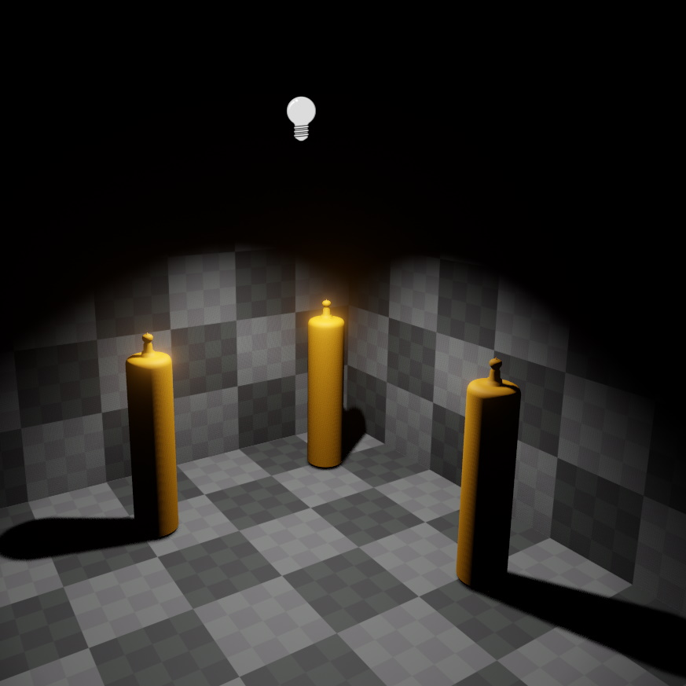

Spot Light Component
The spot light component adds a dynamic light source that illuminates the scene within a cone. The cone's inner angle determines the area that is illuminated equally bright. Between the inner angle and outer angle the light will fade to black. Spot lights should be preferred over point lights when this can prevent the need for dynamic shadows. For example, a light mounted to a ceiling should illuminate the area below it, but not shine through the ceiling and illuminate objects above. A spot light with a large cone can achieve this.

Each light source costs performance. Try to reduce the number of light sources that illuminate the same area. Use the light count render mode to find hotspots.
Note that unless a light source casts dynamic shadows, it's light will shine through walls. Casting shadows is very costly, though. When it is possible to avoid casting shadows, for example by using multiple smaller lights instead, the performance should always be better.
Video: How to create a light source

Component Properties
See this page for shadow related component properties.
LightColor, Intensity: The color and brightness of the light.Range: The distance over which the light source affects geometry. By default this is set toAuto, meaning the necessary range will be computed from the light's brightness. For full control, the range can be set manually. The light will always attenuate to zero within the given range, so by specifying a small range you can create a small, yet very bright light.InnerSpotAngle: The inner angle of the spot light's cone. Within this angle the spot light will not attenuate (except by distance) and stay equally bright.OuterSpotAngle: The spot light will attenuate between the inner angle and the outer angle to zero. If the outer angler is very close to the inner angle, the spot light will have a very sharp cut off. If the outer angle is considerably larger than the inner angle, the spot light will smoothly fade to black at the edges.